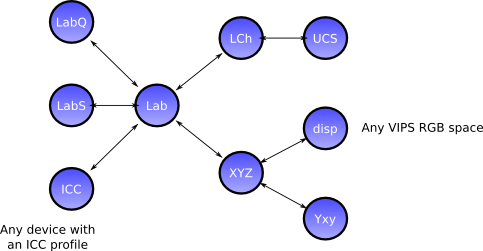

| Top |
These operators let you transform coordinates and images between colour spaces, calculate colour differences, and move to and from device spaces.
Radiance images have four 8-bits bands and store 8 bits of R, G and B and another 8 bits of exponent, common to all channels. They are widely used in the HDR imaging community.
The colour functions can be divided into three main groups. First,
functions to transform images between the different colour spaces supported
by VIPS: RGB, sRGB,
XYZ, Yxy,
Lab, LabQ,
LabS, LCh and
CMC). Use vips_colourspace() to move an image to a
target colourspace using the best sequence of colour transform operations.
Secondly, there are a set of operations for
calculating colour difference metrics. Finally, VIPS wraps LittleCMS and
uses it to provide a set of operations for reading and writing images with
ICC profiles.
This figure shows how the VIPS colour spaces interconvert:
 The colour spaces supported by VIPS are:
LabQ
This is the principal VIPS colorimetric storage format.
LabQ images have four 8-bit bands and store 10 bits of L and 11 bits
of a and b.
You cannot perform calculations on LabQ images (they are
tagged with VIPS_CODING_LABQ), though a few operations such as
vips_extract_area() will work directly with them.
LabS
This format represents coordinates in CIELAB space as a
three-band VIPS_FORMAT_SHORT image, scaled to fit the full range of
bits. It is the best format for computation, being relatively
compact, quick, and accurate. Colour values expressed in this way
are hard to visualise.
Lab
Lab colourspace represents CIELAB colour values with a three-band
VIPS_FORMAT_FLOAT image. This is the simplest format for general
work: adding the constant 50 to the L channel, for example, has the
expected result.
VIPS uses D65 LAB, but you can use other colour temperatures with a
little effort, see vips_XYZ2Lab().
XYZ
CIE XYZ colour space represented as a three-band VIPS_FORMAT_FLOAT
image.
Yxy
CIE Yxy colour space represented as a three-band VIPS_FORMAT_FLOAT
image.
RGB / sRGB
VIPS converts XYZ to and from sRGB using the usual formula:
http://en.wikipedia.org/wiki/SRGB
You can also use vips_icc_transform() and friends to go to and from
device space with a generic profile.
LCh
Like Lab, but rectangular ab coordinates
are replaced with
polar Ch (Chroma and hue) coordinates.
Hue angles are expressed in degrees.
CMC
A colour space based on the CMC(1:1) colour difference measurement.
This is a highly uniform colour space, much better than CIELAB for
expressing small differences.
The CMC colourspace is described in "Uniform Colour Space Based on the
CMC(l:c) Colour-difference Formula", M R Luo and B Rigg, Journal of the
Society of Dyers and Colourists, vol 102, 1986. Distances in this
colourspace approximate, within 10% or so, differences in the CMC(l:c)
colour difference formula.
You can calculate metrics like CMC(2:1) by scaling the spaces before
finding differences.
#define VIPS_A_X0 (109.8503)
Areas under curves for illuminant A (2856K), 2 degree observer.
#define VIPS_B_X0 (99.0720)
Areas under curves for illuminant B (4874K), 2 degree observer.
#define VIPS_C_X0 (98.0700)
Areas under curves for illuminant C (6774K), 2 degree observer.
#define VIPS_D3250_X0 (105.6590)
Areas under curves for black body at 3250K, 2 degree observer.
gboolean
vips_colourspace_issupported (const VipsImage *image);
Test if image
is in a colourspace that vips_colourspace() can process. For
example, VIPS_INTERPRETATION_RGB images are not in a well-defined
colourspace, but VIPS_INTERPRETATION_sRGB ones are.
int vips_colourspace (VipsImage *in,VipsImage **out,VipsInterpretation space,...);
Optional arguments:
source_space
: input colour space
This operation looks at the interpretation field of in
(or uses
source_space
, if set) and runs
a set of colourspace conversion functions to move it to space
.
For example, given an image tagged as VIPS_INTERPRETATION_YXY, running
vips_colourspace() with space
set to VIPS_INTERPRETATION_LAB will
convert with vips_Yxy2XYZ() and vips_XYZ2Lab().
See also: vips_colourspace_issupported(),
vips_image_guess_interpretation().
in |
input image |
|
out |
output image |
|
space |
convert to this colour space |
|
... |
|
int vips_LabQ2sRGB (VipsImage *in,VipsImage **out,...);
Unpack a LabQ (VIPS_CODING_LABQ) image to a three-band short image.
See also: vips_LabS2LabQ(), vips_LabQ2sRGB(), vips_rad2float().
int vips_rad2float (VipsImage *in,VipsImage **out,...);
Unpack a RAD (VIPS_CODING_RAD) image to a three-band float image.
See also: vips_float2rad(), vips_LabQ2LabS().
int vips_float2rad (VipsImage *in,VipsImage **out,...);
Convert a three-band float image to Radiance 32-bit packed format.
See also: vips_rad2float(), VIPS_CODING_RAD, vips_LabQ2Lab().
int vips_LabS2LabQ (VipsImage *in,VipsImage **out,...);
Convert a LabS three-band signed short image to LabQ
See also: vips_LabQ2LabS().
int vips_LabQ2LabS (VipsImage *in,VipsImage **out,...);
Unpack a LabQ (VIPS_CODING_LABQ) image to a three-band short image.
See also: vips_LabS2LabQ(), vips_LabQ2LabS(), vips_rad2float().
int vips_LabQ2Lab (VipsImage *in,VipsImage **out,...);
Unpack a LabQ (VIPS_CODING_LABQ) image to a three-band float image.
See also: vips_LabQ2Lab(), vips_LabQ2LabS(), vips_rad2float().
int vips_Lab2LabQ (VipsImage *in,VipsImage **out,...);
Convert a Lab three-band float image to LabQ (VIPS_CODING_LABQ).
See also: vips_LabQ2Lab().
int vips_Lab2XYZ (VipsImage *in,VipsImage **out,...);
optional arguments:
temp
: colour temperature
Turn Lab to XYZ. The colour temperature defaults to D65, but can be
specified with temp
.
int vips_XYZ2Lab (VipsImage *in,VipsImage **out,...);
optional arguments:
temp
: colour temperature
Turn XYZ to Lab, optionally specifying the colour temperature. temp
defaults to D65.
int vips_scRGB2sRGB (VipsImage *in,VipsImage **out,...);
Optional arguments:
depth
: depth of output image in bits
Convert an scRGB image to sRGB. Set depth
to 16 to get 16-bit output.
See also: vips_LabS2LabQ(), vips_scRGB2sRGB(), vips_rad2float().
int vips_sRGB2scRGB (VipsImage *in,VipsImage **out,...);
Convert an sRGB image to scRGB.
See also: vips_scRGB2XYZ(), vips_rad2float().
int vips_LCh2CMC (VipsImage *in,VipsImage **out,...);
Turn LCh to CMC.
The CMC colourspace is described in "Uniform Colour Space Based on the CMC(l:c) Colour-difference Formula", M R Luo and B Rigg, Journal of the Society of Dyers and Colourists, vol 102, 1986. Distances in this colourspace approximate, within 10% or so, differences in the CMC(l:c) colour difference formula.
This operation generates CMC(1:1). For CMC(2:1), halve Lucs and double Cucs.
See also: vips_CMC2LCh().
int vips_CMC2LCh (VipsImage *in,VipsImage **out,...);
Turn LCh to CMC.
See also: vips_LCh2CMC().
int vips_LabS2Lab (VipsImage *in,VipsImage **out,...);
Convert a LabS three-band signed short image to a three-band float image.
See also: vips_LabS2Lab().
int vips_Lab2LabS (VipsImage *in,VipsImage **out,...);
Turn Lab to LabS, signed 16-bit int fixed point.
See also: vips_LabQ2Lab().
int
vips_icc_present (void);
VIPS can optionally be built without the ICC library. Use this function to test for its availability.
int vips_icc_transform (VipsImage *in,VipsImage **out,const char *output_profile,...);
Optional arguments:
input_profile
: get the input profile from here
intent
: transform with this intent
depth
: depth of output image in bits
embedded
: use profile embedded in input image
Transform an image with a pair of ICC profiles. The input image is moved to profile-connection space with the input profile and then to the output space with the output profile.
If embedded
is set, the input profile is taken from the input image
metadata, if present. If there is no embedded profile,
input_profile
is used as a fall-back.
If embedded
is not set, the input profile is taken from
input_profile
. If input_profile
is not supplied, the
metadata profile, if any, is used as a fall-back.
Use vips_icc_import() and vips_icc_export() to do either the first or
second half of this operation in isolation.
in |
input image |
|
out |
output image |
|
output_profile |
get the output profile from here |
|
... |
|
int vips_icc_import (VipsImage *in,VipsImage **out,...);
Optional arguments:
input_profile
: get the input profile from here
intent
: transform with this intent
embedded
: use profile embedded in input image
pcs
: use XYZ or LAB PCS
Import an image from device space to D65 LAB with an ICC profile. If pcs
is
set to VIPS_PCS_XYZ, use CIE XYZ PCS instead.
If embedded
is set, the input profile is taken from the input image
metadata. If there is no embedded profile,
input_profile_filename
is used as a fall-back.
If embedded
is not set, the input profile is taken from
input_profile
. If input_profile
is not supplied, the
metadata profile, if any, is used as a fall-back.
int vips_icc_export (VipsImage *in,VipsImage **out,...);
Optional arguments:
intent
: transform with this intent
depth
: depth of output image in bits
output_profile
: get the output profile from here
pcs
: use XYZ or LAB PCS
Export an image from D65 LAB to device space with an ICC profile.
If pcs
is
set to VIPS_PCS_XYZ, use CIE XYZ PCS instead.
If output_profile
is not set, use the embedded profile, if any.
If output_profile
is set, export with that and attach it to the output
image.
int vips_icc_ac2rc (VipsImage *in,VipsImage **out,const char *profile_filename);
Transform an image from absolute to relative colorimetry using the MediaWhitePoint stored in the ICC profile.
See also: vips_icc_transform(), vips_icc_import().
int vips_dE76 (VipsImage *left,VipsImage *right,VipsImage **out,...);
Calculate dE 76.
left |
first input image |
|
right |
second input image |
|
out |
output image |
|
... |
|
int vips_dE00 (VipsImage *left,VipsImage *right,VipsImage **out,...);
Calculate dE 00.
left |
first input image |
|
right |
second input image |
|
out |
output image |
|
... |
|
int vips_dECMC (VipsImage *left,VipsImage *right,VipsImage **out,...);
Calculate dE CMC. The input images are transformed to CMC colour space and the euclidean distance between corresponding pixels calculated.
To calculate a colour difference with values for (l:c) other than (1:1), transform the two source images to CMC yourself, scale the channels appropriately, and call this function.
See also: vips_colourspace()
left |
first input image |
|
right |
second input image |
|
out |
output image |
|
... |
|
void vips_col_Lab2XYZ (float L,float a,float b,float *X,float *Y,float *Z);
Calculate XYZ from Lab, D65.
See also: vips_Lab2XYZ().
void vips_col_XYZ2Lab (float X,float Y,float Z,float *L,float *a,float *b);
Calculate XYZ from Lab, D65.
See also: vips_XYZ2Lab().
void vips_col_Ch2ab (float C,float h,float *a,float *b);
Calculate ab from Ch, h in degrees.
float
vips_col_Lcmc2L (float Lcmc);
Calculate L from Lcmc using a table. Call vips_col_make_tables_CMC() at
least once before using this function.
float
vips_col_Ccmc2C (float Ccmc);
Calculate C from Ccmc using a table.
Call vips_col_make_tables_CMC() at
least once before using this function.
float vips_col_Chcmc2h (float C,float hcmc);
Calculate h from C and hcmc, using a table.
Call vips_col_make_tables_CMC() at
least once before using this function.
int vips_col_sRGB2scRGB_8 (int r,int g,int b,float *R,float *G,float *B);
int vips_col_sRGB2scRGB_16 (int r,int g,int b,float *R,float *G,float *B);
int vips_col_scRGB2XYZ (float R,float G,float B,float *X,float *Y,float *Z);
int vips_col_XYZ2scRGB (float X,float Y,float Z,float *R,float *G,float *B);
int vips_col_scRGB2sRGB_8 (float R,float G,float B,int *r,int *g,int *b,int *or_ret);
int vips_col_scRGB2sRGB_16 (float R,float G,float B,int *r,int *g,int *b,int *or_ret);
float vips_pythagoras (float L1,float a1,float b1,float L2,float a2,float b2);
Pythagorean distance between two points in colour space. Lab/XYZ/CMC etc.
float vips_col_dE00 (float L1,float a1,float b1,float L2,float a2,float b2);
CIEDE2000, from:
Luo, Cui, Rigg, "The Development of the CIE 2000 Colour-Difference Formula: CIEDE2000", COLOR research and application, pp 340
The rendering intent. VIPS_INTENT_ABSOLUTE is best for scientific work, VIPS_INTENT_RELATIVE is usually best for accurate communication with other imaging libraries.
Pick a Profile Connection Space for vips_icc_import() and
vips_icc_export(). LAB is usually best, XYZ can be more convenient in some
cases.